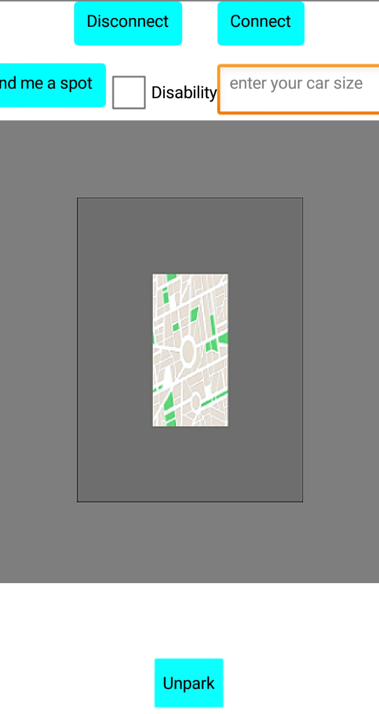

Αρχικά
δίνεις τις διαστάσεις του αυτοκινήτου σου στην περιοχή "Enter your car size" και με το πάτημα του κουμπιού "Find me a spot" η αναζήτηση στη βάση δεδομένων εμφανίζει στην οθόνη σου
θέση/θέσεις
για παρκάρισμα, μετατρέποντας έναν καθημερινό πονοκέφαλο σε μια απλή
διαδικασία, γλιτώνοντας χρόνο, κόπο και εξοικονομώντας ενέργεια.
Όταν
επιλέξεις μια από τις διαθέσιμες θέσεις αυτή σημειώνεται στη βάση δεδομένων ως
ΜΗ διαθέσιμη και δεν εμφανίζεται στις αναζητήσεις άλλων χρηστών,
Όταν ξεπαρκάρεις
πατάς το πλήκτρο Unpark και έτσι η θέση είναι και πάλι διαθέσιμη στους άλλους χρήστες
της εφαρμογής.

You enter your cars dimensions in the "Enter your car size" area and by clicking on the "Find me a spot" button, the search starts and when the process is done
it displays on your screen the available positions / places for parking, turning a daily headache into a simple process, saving time, effort and energy.
When selecting one of the available positions this position gets marked in the database as inavailable and is not appearing in other users' searches,
When you press the key "Unpark" the location is again available to other application users.
Here's a video of the whole system operating